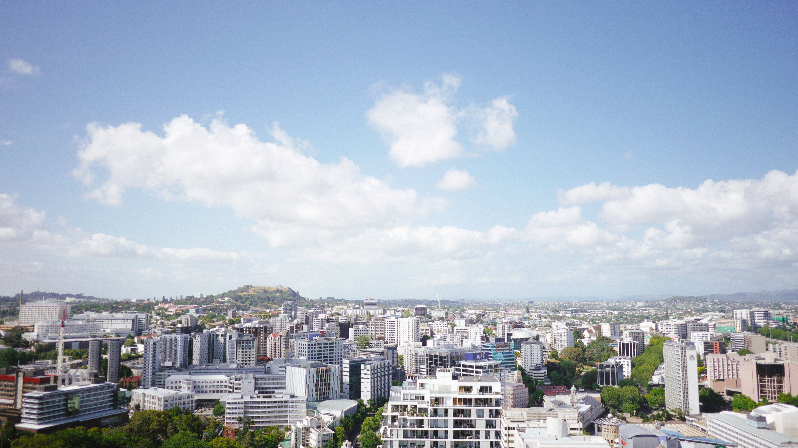

Franklin Breaks Record
 From Arizona to upstate new York, prototypes for smart, sustainable models of living can be found. Though these homes are often created by visionaries of the past, they look like they're from the future. Futuro Houses were the brainchild of Finnish designer Matti Suuronen, and nearly 100 were built during the late 1960s and early 1970s. The one-bedroom, one-bath UFO-like domes are built from fiberglass-reinforced plastic, and not only are they cool looking, but they're quite resilient. Round houses are better able to withstand strong wind and the one Futuro House still occupied in Pensacola, Fla. has outlasted Hurricanes Ivan, Dennis, and other storms. It's now an iconic tourist attraction in the area, with a little alien waving from the window. An Earthship is a type of passive solar house that is made of both natural and upcycled materials such as tires, pioneered by the architect Michael Reynolds. The off-the-grid homes are designed to be completely self-sustaining, collecting water from its environment and storing its own energy. Though it didn't become a phenomenon, there's one you can tour in New Mexico and two dozen in the U.K. Built in 1981, Florida's Dome Houses were the vision of oil magnate Bob Lee, who saw the potential for a vacationer's paradise. The igloo-like domes were built completely out of concrete, helping them survive erosion as ocean levels rose over the years. Lee built the homes to be self-sufficient and eco-friendly. They're self-sustaining and feature a drainage system where rain water could bounce off the domes and into a collection bin surrounding them. Whether these homes are currently occupied, open for tours or simply roadside destinations, they are pretty visually incredible.